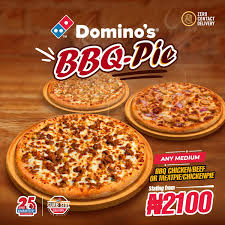

Pizza (Italian: [ˈpittsa], Neapolitan: [ˈpittsə]) is a dish of Italian origin consisting of a usually round, flat base of leavened wheat-based dough topped with tomatoes, cheese, and often various other ingredients (such as various types of sausage, anchovies, mushrooms, onions, olives, vegetables, meat, ham, etc.), which is then baked at a high temperature, traditionally in a wood-fired oven.[1] A small pizza is sometimes called a pizzetta. A person who makes pizza is known as a pizzaiolo. In Italy, pizza served in a restaurant is presented unsliced, and is eaten with the use of a knife and fork.[2][3] In casual settings, however, it is cut into wedges to be eaten while held in the hand. The term pizza was first recorded in the 10th century in a Latin manuscript from the Southern Italian town of Gaeta in Lazio, on the border with Campania.[4] Modern pizza was invented in Naples, and the dish and its variants have since become popular in many countries.[5] It has become one of the most popular foods in the world and a common fast food item in Europe, North America and Australasia; available at pizzerias (restaurants specializing in pizza), restaurants offering Mediterranean cuisine, via pizza delivery, and as street food.[5] Various food companies sell ready-baked pizzas, which may be frozen, in grocery stores, to be reheated in a home oven.
click the picture below to order now in italy
we need this details to order
| S/N | name | password | age | gender | country |
|---|